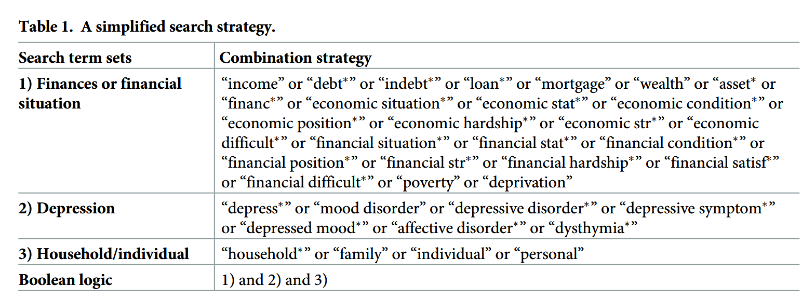

Financial stress and depression in adults: A systematic review
Thoughts
Proximal factors, like low socioeconomic status and low income, as well as distal factors, like income inequality, are determinants of depression.
There are positive association between indicators of financial stress (debt, mortgage debt, unsecured debt, debt stress, debt load change, financial hardship, asking for financial help) and depression, but the nature of this relationship and its mediators and moderators lack research, although some studies suggest bidirectionality. It’s important to note that debt to asset ratio appeared to be a better predictor of depression than total debt, because it takes into account the wealth of the individual. This is related to the fact that high absolute debt on high income households may be a common finding and directly proportional to mental health.
There are negative association between depression and income/wealth (absolute/relative; household, pension enrolment). The directionality is suggested to be income ⇒ depression, although the effect size varies according to how income is measured and the degree of poverty. Lack information regarding mediators and moderators, but the economic status of the region in which people live may influence this relationship. Also, the level of income inequality at the neighborhood is strongly associated with higher risk of depression. Compared to absolute income, relative income seemed to better predict depression.
There’s a time-dependent effect that modulates the relationship between depression and debt. Although the effect of past financial hardship on depression decays with time, there are evidence that perceived financial strain in childhood predicts depression in adults. Also, only short-term debt seems statistically significantly associated with depressive symptoms, when compared to other forms of debt.
Subjective perceptions of financial stress may me more important than objective variables:
- Perceived financial hardship (feelings of insufficiency of food, clothes, healthcare)
- Subjective financial situation, stress, strain, position, dissatisfaction
Theories that might explain how financial stress leads to depression:
- Social causation theory
- Individuals or families under financial stress are more likely to be exposed to economic uncertainty, unhealthy lifestyle, worse living environment, etc.
- Strictly related to financial stress measured by income and financial hardships
- Psychological stress theory
- The objective indicators of financial stress effect on depression may be mediated by the individual’s subjective perception on his financial situation
- The expectation of financial stress, coupled with income uncertainty and volatility, is another facet of this relationship
- Social selection theory
- Individuals with poor mental health are at risk of bad financial situation
- Prone to expend on healthcare
- Decreased productivity lead to unemployment and ultimately decreased income
There’s insufficient evidence regarding financial stress and depression according to age and gender groups.
Connects with: @butterworth2009 @drentea2015 @krause1998
Annotations

guan2022 - p. 2
Many social and economic determinants of depression have been identified. These include proximal factors like unemployment, low socioeconomic status, low education, low income and not being in a relationship and distal factors such as income inequality, structural characteristics of the neighbourhood and so on [10–12].
guan2022 - p. 2
findings regarding the relationship between different indicators of financial stress and depression are inconclusive in the previous literature
guan2022 - p. 2
positive associations between depression and various indicators of financial stress such as debt or debt stress, financial hardship, or difficulties [13–15]
guan2022 - p. 2
Zimmerman and Katon [16] found that when other socioeconomic confounders were considered, no relationship between low income and depression was observed
guan2022 - p. 2
evidence showing a negative association between low income and major depressive disorder in South Korea [17]
guan2022 - p. 2
2010 review on poverty and mental disorders also finds that the association between income and mental disorders (including depression) was still unclear [18]
guan2022 - p. 2
The social causation theory is one of the theories that has been proposed to explain possible mechanisms underlying the effect of poverty on mental disorders [18, 19]. It states that stressful financial circumstances might lead to the occurrence of new depressive symptoms or maintain previous depression.
guan2022 - p. 2
Individuals or households with limited financial resources are more vulnerable to stressful life events (e.g., economic crises, public-health crises), which might increase the risk of mental health problems [18–20]
guan2022 - p. 2
social causation might not be applicable to situations where individuals are not in poverty or deprivation but still can experience depression due to financial stress
guan2022 - p. 2
there was a significant relationship between personal unsecured debt or unpaid debt obligations and the increased risk of common mental disorders, suicidal ideation and so on [21, 22]. In terms of depression, they found that there was a strong and consistent positive relationship between debt and depression
guan2022 - p. 2
[18, 23]. Both reviews find a positive relationship between poverty and common mental disorders
guan2022 - p. 2
still unknown which domains of financial stress have clearer associations with depression and whether there is heterogeneity in the relationship
guan2022 - p. 3
the existing reviews do not discuss the possible mechanisms underpinning the association between financial stress and depression
guan2022 - p. 3
eligible economic indicators of financial stress in this review include objective financial variables like income, assets, wealth, indebtedness; as well as measures that capture subjective perceptions of financial stress, such as perceived financial hardship (e.g., subjective feelings of sufficiency regarding food, clothes, medical care, and housing), subjective financial situation (e.g., individuals’ feelings about their overall financial situation), subjective financial stress, subjective financial position, and financial dissatisfaction
guan2022 - p. 3
six bibliographic databases including CINAHL, PsycINFO, EMBASE, EconLit, AMED, and Business Source Premier were searched
guan2022 - p. 6
uality of the included studies was assessed using an adapted version of the Quality Assessment Tool for Quantitative Studies
guan2022 - p. 6
5,134 papers were identified after searching online databases
guan2022 - p. 6
40 articles were finally identified for the data extraction
guan2022 - p. 7
First, personal or household finances, which include income, assets or wealth, debt or hardship were investigated
guan2022 - p. 7
Financial hardship was defined as difficulties in meeting the basic requirements of daily life due to a lack of financial resources.
guan2022 - p. 7
asking for financial help from others were used by these studies as proxies for financial hardship
guan2022 - p. 7
some studies examined the associations between depression and subjective perceptions of financial stress such as perceived financial hardship (e.g., subjective feelings of insufficiency regarding food, clothes, medical care, etc.), subjective financial situation (e.g., individual’s feelings of their overall financial situation), subjective financial stress, subjective financial position, financial dissatisfaction
guan2022 - p. 8
Osafo et al. found that in the UK, an increase in household relative income (i.e., income rank) was statistically related to a decreased risk of depression at a given time point
guan2022 - p. 8
Lund and Cois reported similar results: they found that lower household income at baseline could predict a worse depression status during the follow-up period in South Afric
guan2022 - p. 8
Sareen et al. found that individuals with lower levels of household income faced an increased risk of depression
guan2022 - p. 8
Chen et al. found that pension enrolment and pension income were significantly associated with a reduction in CESD scores among Chinese older adults
guan2022 - p. 8
The strength of the relationship between income and depression varies and can be affected by how income is measured
guan2022 - p. 8
a household’s relative income level within a reference group was found to be a more consistent household financial predictor of depression
guan2022 - p. 8
The relationship between income and depression holds for all income groups but is more pronounced among lower-income groups
guan2022 - p. 8
Zimmerman and Katon, the association between depression and income is stronger among people with income levels below the median
guan2022 - p. 8
Jo et al. found that the association between income and depression was significant among participants from low-economic-status regions, while it was insignificant among participants from high-economic-status regions
Note: Could this indicate that the problem isn’t just the lack of money, but also the access to good public services and a high-economic-status region?
guan2022 - p. 9
having more depression symptoms at baseline was significantly associated with lower levels of individual assets in the follow-up period
Note: Important: depression symptoms and financial stress may have bidirectional relationship
guan2022 - p. 9
Hojman et al. also found that individuals who were always over-indebted or switch from having moderate levels of debt to over-indebtedness had more depressive symptoms than those who were never over-indebted
guan2022 - p. 9
The debt-depression relationship varies with different operationalisations of debt with the debt to asset ratio being a more reliable predictor of depression than the total debt.
guan2022 - p. 10
positive association between high levels of mortgage debt and high unsecured consumer debt (regardless of the amount) and depression
guan2022 - p. 10
unsecured debt (e.g., financial debt), or short-term debt were associated with a higher risk of experiencing depression, while secured debt itself (e.g., mortgage debt) or long-term debt were not related to depressive symptoms.
guan2022 - p. 10
only short-term debt (i.e., unsecured debt) was positively and statistically significantly associated with depressive symptoms, while the effects of mid-term and long-term debt (e.g., mortgage loan) on depressive symptoms were not significant
guan2022 - p. 10
The intertemporal association between financial hardship and depressive symptoms was reported in two longitudinal studies [15, 39]. However, the consistency of the findings is sensitive to the statistical methods applied. Mirowsky and Ross found that current financial hardship was associated with a subsequent increase in depression in the US [39]. The other study only observed an association between financial hardship at baseline and baseline depression, as well as a weak or even no association between prior financial hardship and current depression
guan2022 - p. 11
reviewed studies showed that the effect of past financial hardship on depressive symptoms decayed with time. In other words, current financial hardship mattered the most for current depressive symptoms.
guan2022 - p. 11
irowsky and Ross found that the effects of consistent hardship and new financial hardship (3 years later) on depressive symptoms were positive and significant
guan2022 - p. 11
Consistent with this, Butterworth et al. also found that the individuals who currently experienced financial hardship were more likely to have depression than those who only experienced financial hardship in the past or never experienced it
guan2022 - p. 11
All of them (including four cross-sectional and seven longitudinal studies) reported a positive relationship between subjective financial strain and depression, holding after adjustments
guan2022 - p. 11
The positive and significant association between perceived financial strain in childhood and depression in adults was found in both a cross-sectional study and a longitudinal study [42, 47]
guan2022 - p. 12
The gender difference of the association between perceived financial strain and depression was examined in two studies and no statistical difference between females and males was observed, though women tended to report worse depression [36, 44]
guan2022 - p. 12
The reviewed studies consistently reported a positive association between low income and depressive symptoms in univariable analyses. However, this association was largely reduced or even became insignificant when other social and economic factors (such as educational level, employment status and so on) and health status were controlled for
guan2022 - p. 12
Patel et al.’s review concluded that a higher level of income inequality at the neighbourhood level was strongly associated with a higher risk of depression
guan2022 - p. 13
insufficient evidence on this topic suggests the need for more research to investigate the mental health effects of relative income (or wealth)
guan2022 - p. 13
An important consideration regarding the debt-depression relationship is that having personal or household debt does not always lead to depression, as debt is not always a sign of financial problems.
guan2022 - p. 13
future longitudinal research on the impact of debt on depression should consider mediators to understand the nature of the causal association between debt and mental health
guan2022 - p. 13
They provide supportive evidence that, debt and subjective financial stress might lead to subsequent depressive symptoms.
guan2022 - p. 13
Longitudinal evidence remains limited as to the understanding of both directions and causality of the relationships between other indicators of financial stress and depression.
guan2022 - p. 14
The reviewed evidence supports the social causation pathway according to which individuals or households who have low income or low wealth are more likely to be exposed to economic uncertainty, unhealthy lifestyle, worse living environment, deprivation, malnutrition, decreased social capital and so on
Note: This mechanism is applicable to the studies where financial stress is measured by economic indicators related to poverty, such as income poverty, deprivation, and financial hardship.
guan2022 - p. 14
Objective indicators of financial stress might have an indirect effect on depression, which is mediated by the individual’s perception of those objective indicators as resulting in financial stress. Experiencing a similar objective financial situation, people may report different perceptions of the objective financial situation due to the heterogeneity of personal experiences, abilities to manage financial resources, aspirations, and perceived sufficiency of financial resources
Note: psychological stress pathway
guan2022 - p. 14
The expectation of financial stress, not just their occurrence, may also cause depression. Furthermore, people living in poverty face substantial uncertainty and income volatility. The long-run exposure to stress from coping with this volatility may also threaten mental health
Note: psychological stress pathway
guan2022 - p. 14
Social selection theory states that individuals who have mental disorders are more likely to drift into or maintain a worse financial situation
guan2022 - p. 14
Evidence shows that mental problems might increase expenditure on healthcare, reduce productivity, and lead to unemployment, as well as be associated with social stigma, all of which are related to lower levels of income
Note: social selection theory
guan2022 - p. 14
Social causation theory is more important to the relationship between financial stress and depression or substance use; while social selection theory is more important in relation to severe mental disorders such as schizophrenia
Note: social selection theory
guan2022 - p. 17
Antunes A, Frasquilho D, Azeredo-Lopes S, Silva M, Cardoso G, Caldas-de-Almeida JM. The effect of socioeconomic position in the experience of disability among people with mental disorders: findings from the World Mental Health Survey Initiative Portugal. Int J Equity Health [Internet]. 2018; 17(1). Available from: https://doi.org/10.1186/s12939-018-0821-1 PMID: 30086758
guan2022 - p. 17
Assari S. Social determinants of depression: The intersections of race, gender, and socioeconomic status. Brain Sci. 2017; 7(12):156.
guan2022 - p. 17
Lund C, Brooke-Sumner C, Baingana F, Baron EC, Breuer E, Chandra P, et al. Social determinants of mental disorders and the Sustainable Development Goals: a systematic review of reviews. Lancet Psychiatry. 2018; 5(4):357–69. https://doi.org/10.1016/S2215-0366(18)30060-9 PMID: 29580610
guan2022 - p. 17
Bridges S, Disney R. Debt and depression. J Health Econ. 2010; 29(3):388–403. https://doi.org/10. 1016/j.jhealeco.2010.02.003 PMID: 20338649
guan2022 - p. 17
Sweet E, Nandi A, Adam EK, McDade TW. The high price of debt: Household financial debt and its impact on mental and physical health. Soc Sci Med. 2013; 91:94–100. https://doi.org/10.1016/j. socscimed.2013.05.009 PMID: 23849243
guan2022 - p. 17
Butterworth P, Rodgers B, Windsor TD. Financial hardship, socio-economic position and depression: Results from the PATH Through Life Survey. Soc Sci Med. 2009; 69(2):229–37. https://doi.org/10. 1016/j.socscimed.2009.05.008 PMID: 19501441
guan2022 - p. 18
Lund C, Cois A. Simultaneous social causation and social drift: Longitudinal analysis of depression and poverty in South Africa. J Affect Disord. 2018; 229:396–402. https://doi.org/10.1016/j.jad.2017.12.050 PMID: 29331699
guan2022 - p. 18
Butterworth P, Olesen SC, Leach LS. The role of hardship in the association between socio-economic position and depression. Aust N Z J Psychiatry. 2012; 46(4):364–73. https://doi.org/10.1177/ 0004867411433215 PMID: 22508596
guan2022 - p. 18
Sareen J, Afifi TO, McMillan KA, Asmundson GJG. Relationship between household income and mental disorders: Findings from a population-based longitudinal study. Arch Gen Psychiatry. 2011; 68 (4):419. https://doi.org/10.1001/archgenpsychiatry.2011.15 PMID: 21464366
guan2022 - p. 19
Mirowsky J, Ross CE. Age and the effect of economic hardship on depression. J Health Soc Behav. 2001; 42(2):132–50. PMID: 11467249
guan2022 - p. 19
Asebedo SD, Wilmarth MJ. Does how we feel about financial strain matter for mental health? J Fin Ther [Internet]. 2017; 8(1). Available from: http://dx.doi.org/10.4148/1944-9771.1130.
guan2022 - p. 19
Chen X, Wang T, Busch SH. Does money relieve depression? Evidence from social pension expansions in China. Soc Sci Med. 2019; 220:411–20. https://doi.org/10.1016/j.socscimed.2018.12.004 PMID: 30530234
guan2022 - p. 19
Jo S-J, Yim HW, Bang MH, Lee MO, Jun T-Y, Choi J-S, et al. The association between economic status and depressive symptoms: An individual and community level approach. Psychiatry Investig. 2011; 8 (3):194–200. https://doi.org/10.4306/pi.2011.8.3.194 PMID: 21994505
guan2022 - p. 20
Osafo Hounkpatin H, Wood AM, Brown GDA, Dunn G. Why does income relate to depressive symptoms? Testing the income rank hypothesis longitudinally. Soc Indic Res. 2015; 124(2):637–55. https:// doi.org/10.1007/s11205-014-0795-3 PMID: 26478651
guan2022 - p. 20
Richardson T, Elliott P, Roberts R, Jansen M. A longitudinal study of financial difficulties and mental health in a national sample of British undergraduate students. Community Ment Health J. 2017; 53 (3):344–52. https://doi.org/10.1007/s10597-016-0052-0 PMID: 27473685
guan2022 - p. 20
Patel V, Burns JK, Dhingra M, Tarver L, Kohrt BA, Lund C. Income inequality and depression: a systematic review and meta-analysis of the association and a scoping review of mechanisms. World Psychiatry. 2018; 17(1):76–89. https://doi.org/10.1002/wps.20492 PMID: 29352539
guan2022 - p. 20
Reading R, Reynolds S. Debt, social disadvantage and maternal depression. Soc Sci Med. 2001; 53 (4):441–53. https://doi.org/10.1016/s0277-9536(00)00347-6 PMID: 11459395
guan2022 - p. 20
Ridley M, Rao G, Schilbach F, Patel V. Poverty, depression, and anxiety: Causal evidence and mechanisms. Cambridge, MA: National Bureau of Economic Research; 2020.